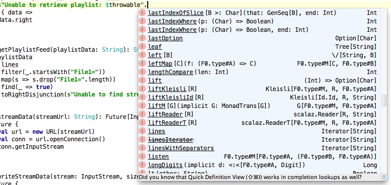

Scala.io - 24 October 2014
Noel Markham - @noelmarkham
libraryDependencies += "org.scalaz" %% "scalaz-core" % "7.1.0"
import scalaz._
import Scalaz._
.option
scala> val boolT = 6 < 10
boolT: Boolean = true
scala> val boolF = 6 > 10
boolF: Boolean = false
scala> boolT.option("value if true")
res0: Option[String] = Some(value if true)
scala> boolF.option("value if true")
res1: Option[String] = None
Neater than:
scala> if(boolT) Some("value if true") else None
res2: Option[String] = Some(value if true)
.parseXXX
scala> "6".parseInt
res3: scalaz.Validation[NumberFormatException,Int] = Success(6)
scala> "corrie".parseBoolean
res4: scalaz.Validation[IllegalArgumentException,Boolean] =
Failure(java.lang.IllegalArgumentException: For input string: "corrie")
.allPairs
scala> List(1, 2, 3, 4).allPairs
res6: List[(Int, Int)] = List((1,2), (2,3), (3,4), (1,3), (2,4), (1,4))
.powerset
scala> List('a', 'b', 'c').powerset.foreach(println)
List(a, b, c)
List(a, b)
List(a, c)
List(a)
List(b, c)
List(b)
List(c)
List()
.some
scala> val corrie = "corrie".some
corrie: Option[String] = Some(corrie)
scala> case class Money(currency: String, amount: Int)
defined class Money
scala> Money("EUR", 3).some
res3: Option[Money] = Some(Money(EUR, 3))
There are plenty more.
A trait for defining order:
trait Ord[T] {
def compare(a: T, b: T): Boolean
}
An Ord instance for a specific type:
object intOrd extends Ord[Int] {
def compare(a: Int, b: Int): Boolean = a <= b
}
This instance can be used when necessary:
def sort[T](xs: List[T])(ord: Ord[T]): List[T] = ...
scala> sort(List(3, 2, 1))(intOrd)
res5: List[Int] = List(1, 2, 3)
implicit object intOrd extends Ord[Int] ... // as before
def sort[T](xs: List[T])(implicit ord: Ord[T]): List[T] = ... // as before
scala> sort[Int](List(4, 3, 6, 1, 7))
res4: List(1, 3, 4, 6, 7)
No implicit in scope:
scala> sort[String](List("z", "y", "x", "w")
<console>:28: error:
could not find implicit value for parameter ord: Ord[String]
(This example lifted from Martin Odersky's paper: Type Classes as Objects and Implicits)
public interface Comparator<T> {
int compare(T o1, T o2);
}
Collections.sort:
public static <T> void sort(List<T> list, Comparator<? super T> c)
Within Scalaz:
OrderEqualFunctorMonoidMonad...
scala> "Hello" === "olleH".reverse
res13: Boolean = true
scala> "six" === 6
<console>:20: error: type mismatch;
found : Int(6)
required: String
"six" === 6
^
class Money(val ccy: String, val amount: Int)
implicit val equalMoney: Equal[Money] = new Equal[Money] {
override def equal(m1: Money, m2: Money): Boolean = {
m1.ccy === m2.ccy && m2.amount === m2.amount
}
}
new Money("GBP", 3) === new Money("EUR", 3)
case class Money(ccy: String, amount: Int)
implicit val equalMoney: Equal[Money] = Equal.equalA[Money]
A Functor is something that can be mapped:
def addInt[F[_]](i: Int, toAdd: F[Int])(implicit f: Functor[F]): F[Int] = {
f.map(toAdd)(_ + i)
}
scala> addInt(5, List(10))
res0: List[Int] = List(15)
scala> addInt(6, 10.some)
res1: Option[Int] = Some(16)
scala> addSix(2, List(10, 11, 12, 13))
res2: List[Int] = List(12, 13, 14, 15)
Scenario:
def f: (A, B, C) => D = ...
val oa: Option[A] = ...
val ob: Option[B] = ...
val oc: Option[C] = ...
val od: Option[D] = (oa |@| ob |@| oc)(f)
Think of this as map for an arbitrary number of arguments
Of course, any Applicative, not just Option
trait Semigroup[F] {
def append(f1: F, f2: => F): F
def |+|(f1: F, f2: => F): F = append(f1, f2)
}
trait Monoid[F] extends Semigroup[F] {
def zero: F
}
A Monoid is a structure with an associative binary operation and an identity element
a + (b + c)
is equal to:
(a + b) + c
Addition: zero
6 + 0 === 6
Multiplication: one
6 * 1 === 6
String concatenation: empty string
"corrie".concat("") === "corrie"
The identity operation for Integer.min?
Integer.min(a, Integer.MAX_VALUE) === a
foldMap
scala> List(10, 9, 8).foldMap(i => i)
res20: Int = 27
scala> List("alpha", "beta", "gamma").foldMap(s => List(s.length))
res22: List[Int] = List(5, 4, 5)
Using append
scala> 1 |+| 2 |+| 3
res23: Int = 6
scala> 1.some |+| 2.some |+| None |+| 3.some
res24: Option[Int] = Some(6)
Using append
scala> val m1 = Map(1 -> List("a", "b"), 2 -> List("aa", "bb"))
scala> val m2 = Map(1 -> List("z"), 3 -> List("yyy", "zzz"))
scala> m1 |+| m2
res25: Map(1 -> List(a, b, z), 3 -> List(yyy, zzz), 2 -> List(aa, bb))
Using append
scala> val m1 = Map("a" -> 1, "b" -> 1)
scala> val m2 = Map("a" -> 1, "c" -> 1)
scala> m1 |+| m2
res30: Map(a -> 2, c -> 1, b -> 1)
scala> List("a", "b", "b", "b", "c", "c").foldMap(c => Map(c -> 1))
res32: Map(b -> 3, a -> 1, c -> 2)
My experience with monads:
for comprehensions is confusing.List monad is quite a confusing place to start.A => M[B], most other things slot into place easily.A monad encapsulates a specific pattern that occurs frequently
Option
Retrieve a value from a map (but it might not be there)
def get(key: A): Option[B]
Perform division (but you might try to divide by zero)
def divide(numerator: Int, denominator: Int): Option[Int]
Future
Make an HTTP call
def postRequest(url: String, data: String): Future[HttpResponse]
Store a value in a database
def persist(userDetails: User): Future[Unit]
There is a pattern here:
def get(key: A): Option[B]
def divide(numerator: Int, denominator: Int): Option[Int]
def postRequest(url: String, data: String): Future[HttpResponse]
def persist(userDetails: User): Future[Unit]
The functions all return Something[Type]
Is this useful? Can we abstract this?
trait Monad[M[_]] { self =>
def point[A](a: => A): M[A]
def bind[A, B](fa: M[A])(f: (A) => M[B]): M[B]
def flatMap[B](f: A => M[B]) = bind(self)(f)
def >>=[B](f: A => M[B]) = bind(self)(f)
def map[A, B](fa: M[A])(f: A => B) = bind(fa)(a => point(f(a)))
}
def point[A](a: => A): M[A]
Given an A, this will give me an M[A]
def bind[A,B](fa: M[A])(f: (A) => M[B]): M[B]
If I have an M[A],
and a function A => M[B],
then I can use this to get M[B]
Given:
def getUserId(username: String): Option[Int]
def getUser(id: Int): Option[User]
def getAddress(user: User): Option[Address]
You can chain these together using flatMap.
def addressFromUsername(username: String): Option[Address] =
getUserId(username).flatMap(getUser).flatMap(getAddress)
getUserId(username) >>= getUser >>= getAddress
def getUserId(username: String): Option[Int]
def getUser(id: Int): Option[User]
def getAddress(user: User): Option[Address]
for {
userId <- getUserId(username)
user <- getUser(userId)
address <- getAddress(user)
} yield address
As long as map and flatMap are defined on the class.
Option: The ability to fail fastEither: The ability to fail fast, telling us about the failureFuture: Perform computations concurrentlyReader: Provide a read-only environmentId: Do nothing special (???)Ficticious scenario:
def getUser(id: Int): Future[User]
def getAddress(user: User): Future[Address]
def addressFromUserId(userId: Int): Future[Address] = {
for {
user <- getUser(userId)
address <- getAddress(user)
} yield address
}
Refactoring:
def addressFromUserId(getUserFunc: Int => Future[User],
getAddressFunc: User => Future[Address])
(userId: Int): Future[Address] = {
for {
user <- getUserFunc(userId)
address <- getAddressFunc(user)
} yield address
}
val userTestF: Int => Future[User] =
i => Future.successful(User(i, "Bob", "Smith"))
val addressTestF: User => Future[Address] =
_ => Future.successful(Address("Paris"))
val wiringTest = addressFromUserId(userTestF, addressTestF)(1234)
assert(Await.result(wiringTest...
More Refactoring:
def addressFromUserId[M[_]: Monad](getUserFunc: Int => M[User],
getAddressFunc: User => M[Address])
(userId: Int): M[Address] = {
for {
user <- getUserFunc(userId)
address <- getAddressFunc(user)
} yield address
}
val userTestF: Int => Id[User] = i => User(i, "Bob", "Smith")
val addressTestF: User => Id[Address] = _ => Address("Paris")
val wiringTest = addressFromUserId[Id](userTestF, addressTestF)(1234)
assert(wiringTest...
scala> :type wiringTest
scalaz.Scalaz.Id[Address]
scala> val address: Address = wiringTest
address: Address = Address(Paris)
Noel Markham